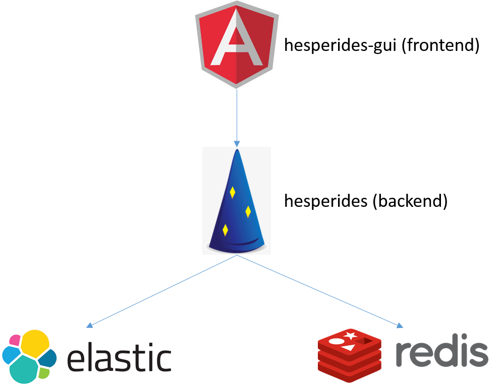
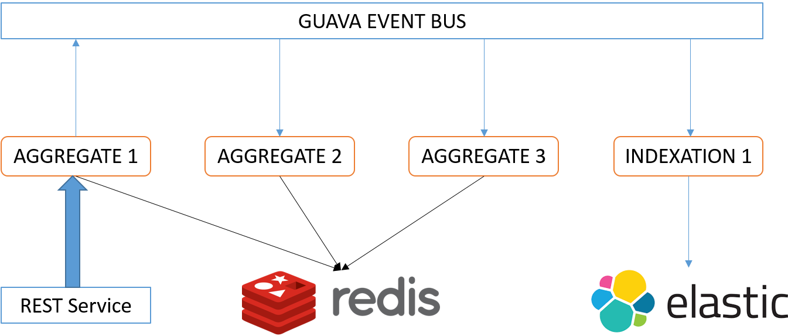
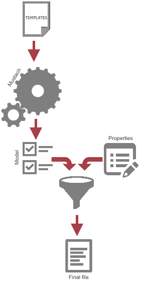

Documentation
Remember to update the documentation to help cronies who come after you !
Hesperides consists of two parts :

If you have a patch or pull request for us, thank you! The more of these guidelines you can follow, the easier (and faster) it is for us to evaluate your code and incorporate it into the development branch. (Borrowing from ThinkUp's Pull Request Checklist):
# get up to date with origin/master and create a branch
git checkout master
git pull
git checkout -b issue/#(issueNumber)
# now make your commits.
$EDITOR somefile
git commit -am "[issue#(issueNumber)] - A good description of what you did"
# If you are now out of date with master, update your master:
git checkout master && git pull
# now go back to your branch and rebase on top of master
git checkout - # "-" will checkout previous branch
git rebase master
# resolve any conflicts, and possibly do `git rebase --continue` to finish rebasing
# now push your branch to your fork, and submit a pull request
git push myfork newbranchRemember to update the documentation to help cronies who come after you !
Follow the traditional development standards.
Tests for backend are mandatory. Otherwise your application will be refused.
Follow the traditional development standards.
For frontend, do not use style = "..." in HTML files : styles are set in css files.
As you already know, Hesperides backend exposes webservices that are requestes by frontend or directly by other external tools. And you know also that services are based on dropwizard. Let's see now how to add a new webservice in Hesperides !
You have to start with the implementation of your webservice. To do that you have to create :
com.vsct.dt.hesperidesConsider your tests now ! (a contribution without tests will not be merged)
Once your processing unit is ok (with unit tests), you can now expose it in REST API Hesperides. To do that you have to :
com.vsct.dt.hesperides.resources. This class must have the following form :
Even if your webservice exists, it's still not available for hesperides. To make it available, you have to add an entrypoint in dropwizard : the run method of MainApplication
/* Events aggregate */
EventsAggregate eventsAggregate = new EventsAggregate(eventBus, eventStore);
environment.lifecycle().manage(eventsAggregate);// Events resource
HesperidesEventResource eventResource = new HesperidesEventResource(eventsAggregate);
environment.jersey().register(eventResource);Not really ! you just have to restart your bakend !
Hesperides backend is made of follwing services :
Hesperides<service>Resource matches each service (for example HesperidesApplicationResource).
An aggregate is also linked to Hesperides<service>Resource (example : ApplicationAggregate). This aggregate :

Aggregates have a parent class SingleThreadAggregate. This class allows only one thread at same time : this mecanism avoids concurrent modifications (for example the modification of the same application).
This limit has been identified. There may be a future development on this subject.
Some classes are registered in event bus to allow indexation of modules, templates and applications in ElasticSearch :
This allows to isolate indexation and aggregates. In fact, as you can see in the diagram above, when an aggregate is executed, it transmits message on event bus, that will be pick up by the other aggregates and the event indexation.
Hesperides doesn't store structured object, but instead store every steps (event) that allowed to build this objet.
127.0.0.1:6379> keys module-demo*
1) "module-demoKatana-war-1.0.0.0-wc"
2) "module-demoKatana-war-1.0.0.1-wc"
127.0.0.1:6379> llen module-demoKatana-war-1.0.0.1-wc
(integer) 4
127.0.0.1:6379> lrange module-demoKatana-war-1.0.0.1-wc 0 999
1) "{\"eventType\":\"com.vsct.dt.hesperides.templating.modules.ModuleCreatedEven
t\",\"data\":\"{\\\"moduleCreated\\\":{\\\"name\\\":\\\"demoKatana-war\\\",\\\"v
ersion\\\":\\\"1.0.0.1\\\",\\\"working_copy\\\":true,\\\"technos\\\":[],\\\"vers
ion_id\\\":1},\\\"templates\\\":[{\\\"name\\\":\\\"application.properties\\\",\\
\"namespace\\\":\\\"modules#demoKatana-war#1.0.0.1#WORKINGCOPY\\\",\\\"filename\
\\":\\\"application.properties\\\",\\\"location\\\":\\\"/appl/{{username}}/prope
rties\\\",\\\"content\\\":\\\"spring.datasource.jndi-name=jdbc/demoKatana\\\\nin
fo.propriete_en_dur={{propriete_a_surcharger}}\\\\n{{#test}}\\\\n\\\\t{{prop2|co
mmentaire}}\\\\n{{/test}}\\\",\\\"version_id\\\":1}]}\",\"timestamp\":1448975559
026,\"user\":\"my_user\"}"
2) "{\"eventType\":\"com.vsct.dt.hesperides.templating.modules.ModuleTemplateUpd
atedEvent\",\"data\":\"{\\\"moduleName\\\":\\\"demoKatana-war\\\",\\\"moduleVers
ion\\\":\\\"1.0.0.1\\\",\\\"updated\\\":{\\\"name\\\":\\\"application.properties
\\\",\\\"namespace\\\":\\\"modules#demoKatana-war#1.0.0.1#WORKINGCOPY\\\",\\\"fi
lename\\\":\\\"application.properties\\\",\\\"location\\\":\\\"/appl/{{username}
}/properties\\\",\\\"content\\\":\\\"spring.datasource.jndi-name=jdbc/demoKatana
\\\\ninfo.propriete_en_dur={{propriete_a_surcharger|@required}}\\\\n{{#test}}\\\
\n\\\\t{{prop2|commentaire}}\\\\n{{/test}}\\\\n{{trucu}}\\\",\\\"version_id\\\":
2}}\",\"timestamp\":1449049683051,\"user\":\"my_user\"}"com.vsct.dt.hesperides.templating.modules.ModuleCreatedEvent event : this means that at this time, "my_user" created a module "demoKatana-war" with a template "application.properties" etc ...To reconstitute the entire module, you must play all records.
A field is really important : version_id.
This field increments each time an update is made in an object (that can be a template/module/techno/platform). This attribute ensures data consistency. Use case :
For platforms/applications :
For modules :
For technos :
In service inputs there are Objects, and in Redis we store the same kind of Object but suffixed by "Data".
The desire is to have immutable objects in the database. When a platform is read in database, a PlatformData object is returned.
This is the same object as the input of the service /applications/{application_name}/ platforms. The advantage is that the Platform object is immediately converted into PlatformData preventing modification (it will recreate an object for this).
Another advantage to build a PlatformData object manually (which does not come automatically from the database), you have to use a builder (constructor is private!). Thus, functional checks (mandatory data ...) are in the constructor.
This allows more robust and more maintainable code.
Hesperides works with a principle of Model and Valuation. On the one hand we have a model (property name, annotation ) and on the other side valuation (property name/value). Model and valuation are not store together in database.
Actually :

If we consider the module module-test, version 1.0 and template appliaction.properties with the following content :
spring.datasource.jndi-name=jdbc/demoKatana
overload_property={{overload_property|@comment "some other comments" @required}}
password={{password|@comment "some comments" @password}}
default={{default|@default foo}}
regular_expression={{regular_expression|@pattern t.*t}}Calling REST service /modules/module-test/1.0/workingcopy/model, we get this :
{
"key_value_properties": [
{
"name": "regular_expression",
"comment": null,
"required": false,
"defaultValue": "",
"pattern": "t.*t",
"password": false
},
{
"name": "default",
"comment": null,
"required": false,
"defaultValue": "foo",
"pattern": "",
"password": false
},
{
"name": "password",
"comment": "some comments",
"required": false,
"defaultValue": "",
"pattern": "",
"password": true
},
{
"name": "overload_property",
"comment": "some other comments",
"required": true,
"defaultValue": "",
"pattern": "",
"password": false
}
],
"iterable_properties": []
}When REST service is called, the class HesperidesModuleResource receive it. Then we get the module (with class ModuleAggregate) and for each file we ask to mustache to give properties (class TemplateSlurper).
Now to get properties values, as they are stored in the platform, we can call REST service /applications/MYAPPLICATION/platforms/MY-PLATFORM/properties?path=#FIRSTLEVEL#SECONDLEVEL#module-test#1.0#WORKINGCOPY :
{
"key_value_properties": [
{
"name": "overload_property",
"value": "FOO"
},
{
"name": "regular_expression",
"value": "tfgehzrgyierhgergert"
},
{
"name": "password",
"value": "{{hesperides.application.version}}"
},
{
"name": "missing",
"value": "Where am I ?"
}
],
"iterable_properties": []
}You can run a REST service to reindex ELS :
Regardless the kind of request, they should all be done against the back-end of hesperides. The back-end will query against Elasticsearch himself